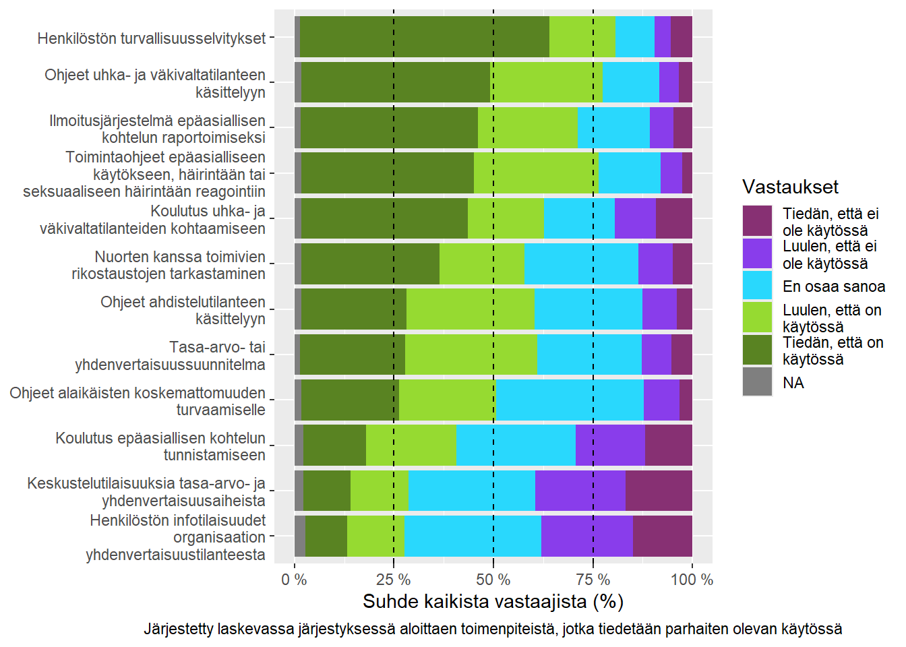
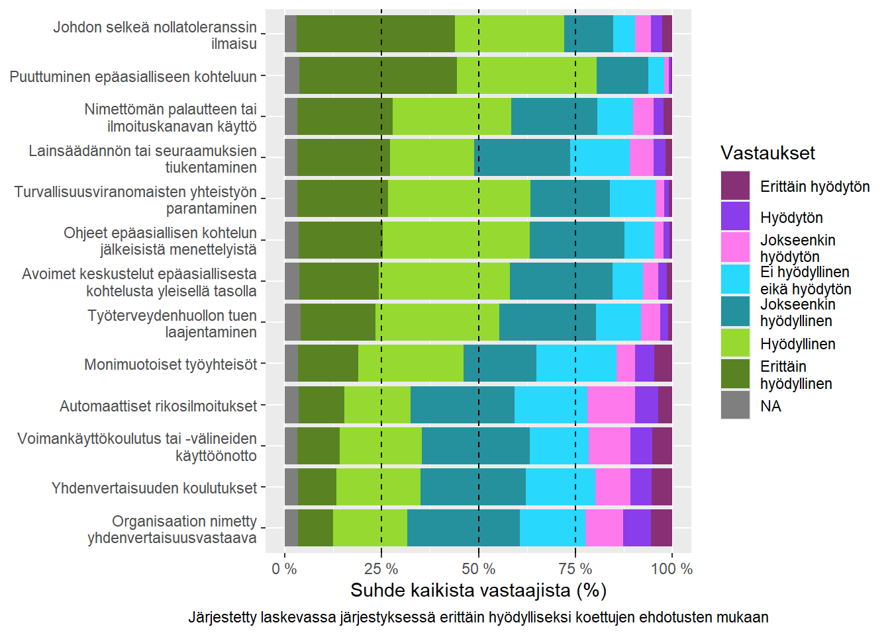

library(scales) # Prosenttilukujen esittämisellelibrary(ggstatsplot) # Tilastollisten kuvioiden rakentamisellelibrary(patchwork) # Usean kuvion yhdistämisellelibrary(tidyverse) # Yleinen datatyöstäminendata <-read.csv2("output/valmisdata.csv", tryLogical =FALSE)
Tämä blogikirjoitus julkaistaan Pelastusopiston blogissa 15.1.2025.Osion analyysit ovat toistettavissa Tietoarkistoon arkistoidulla aineistokopiolla. Ennen toistoa tulee suorittaa luvussa 20 esitetyt aineistopoistot.
Pelastusopiston toteuttama ja Palosuojelurahaston rahoittama Nollatoleranssi-hanke on selvittänyt epäasiallisen ja väkivaltaisen kohtelun esiintyvyyttä, vaikutuksia ja toimenpiteitä pelastusalalla. Tämä blogi on osa neljän julkaisun blogisarjaa, jossa käsitellään valtakunnallisen kyselytutkimuksen tuloksia. Lue aikaisempi blogi täältä.
Nollatoleranssi-hankkeen neljännessä ja viimeisessä blogissa käsittelemme epäasiallista ja väkivaltaista kohtelua estäviä toimenpiteitä. Missä määrin eri toimenpiteitä on otettu käyttöön, mitä vaikutuksia niillä voi olla, ja mitä muita toimenpiteitä vastaajat haluaisivat nähdä otettavan käyttöön?
Muistutamme, että kyselyn aihe voi aiheuttaa valikoitumisharhaa. Tuloksia tulee tulkita varovaisesti ja välttää yleistämistä koko alaan.
36.1 Useimmat toimintaohjelman toimenpiteet ovat otettu käyttöön
Sisäministeriö julkaisi vuoden 2021 lopussa pelastusalan tasa-arvon ja yhdenvertaisuuden toimintaohjelman, joka sisälsi useita eri toimenpiteitä epäasiallisuuksien vähentämiseksi. Haimme toimintaohjelmasta yhteensä 12 eri toimenpidettä, jotka kohdistuivat suoraan organisaatioiden toimintaan. Kysyimme vastaajilta, missä määrin toimenpiteet ovat heidän mielestään käytössä heidän organisaatioissaan.
Useimmat toimenpiteet tiedetään tai luullaan olevan käytössä omassa organisaatiossa (Kuva 36.1). Kuitenkaan noin kolmannes vastaajista eivät tunnista epäasiallisen kohtelun tunnistamiskoulutusten, yhdenvertaisuusaiheiden keskustelutilaisuuksien tai henkilöstön infotilaisuuksien olevan käytössä. Epävarmojen osuudet ovat myös huomattavat, vaihdellen kymmenestä jopa vajaa neljäänkymmeneen prosenttiin vastaajista.
Kuvion piirtäminen
# Muutetaan data pitkään formaattiindata_long <- data |>select(k28_1:k28_12) |>pivot_longer(cols = k28_1:k28_12,names_to ="variable",values_to ="value" )# Haetaan haluttu muuttujajärjestys sekä muuttujien vanhat ja uudet nimetjarjestys <- data_long |>filter(value ==2) |>group_by(variable) |>summarise(ordercount =n()) |>arrange(ordercount) |>pull(variable)vanhat_nimet <- data |>select(k28_1:k28_12) |>colnames()uudet_nimet <-sapply(c("Tasa-arvo- tai yhdenvertaisuussuunnitelma","Toimintaohjeet epäasialliseen käytökseen, häirintään tai seksuaaliseen häirintään reagointiin","Henkilöstön turvallisuusselvitykset","Ohjeet alaikäisten koskemattomuuden turvaamiselle","Nuorten kanssa toimivien rikostaustojen tarkastaminen","Ohjeet ahdistelutilanteen käsittelyyn","Ohjeet uhka- ja väkivaltatilanteen käsittelyyn","Ilmoitusjärjestelmä epäasiallisen kohtelun raportoimiseksi","Koulutus uhka- ja väkivaltatilanteiden kohtaamiseen","Koulutus epäasiallisen kohtelun tunnistamiseen","Keskustelutilaisuuksia tasa-arvo- ja yhdenvertaisuusaiheista","Henkilöstön infotilaisuudet organisaation yhdenvertaisuustilanteesta" ), str_wrap, width =36, USE.NAMES =FALSE)# Piirretään kuvadata_long |>group_by(variable, value) |>summarise(count =n()) |>mutate(prop = count/sum(count)) |>ggplot(aes(y =factor( variable,levels = jarjestys,labels =setNames(as.list(uudet_nimet), vanhat_nimet)[jarjestys]),x = prop,fill =factor( value,levels =sort(unique(value)),labels =sapply(c("Tiedän, että ei ole käytössä","Luulen, että ei ole käytössä","En osaa sanoa","Luulen, että on käytössä","Tiedän, että on käytössä" ), str_wrap, width =18, USE.NAMES =FALSE )) )) +geom_bar(stat ="identity") +scale_x_continuous(labels = scales::label_percent(suffix =" %",decimal.mark ="," )) +scale_fill_manual(values =c("#873073", "#893deb", "#29d8fd", "#96da31", "#598322") ) +labs(x ="Suhde kaikista vastaajista (%)",caption ="Järjestetty laskevassa järjestyksessä aloittaen toimenpiteistä, jotka tiedetään parhaiten olevan käytössä",fill ="Vastaukset" ) +theme(axis.title.y =element_blank(), plot.caption =element_text(hjust =0.5)) +geom_vline(linetype =2,xintercept =0.25 ) +geom_vline(linetype =2,xintercept =0.5 ) +geom_vline(linetype =2,xintercept =0.75 )

Kuva 36.1: Organisaatioiden käyttämät toimenpiteet vastaajien käsitysten mukaan
Eniten varmasti tai luultavasti käytössä olevat toimenpiteet ovat henkilöstön turvallisuusselvitykset (79 % tietävät tai luulevat toimenpiteen olevan käytössä), ohjeet uhka- ja väkivaltatilanteiden käsittelyyn (76 %) sekä toimintaohjeet epäasialliseen käytökseen, häirintään tai seksuaaliseen häirintään reagointiin (75 %).
Vastaavasti eniten varmasti tai luultavasti käyttämättä olevat toimenpiteet ovat keskustelutilaisuudet tasa-arvo- ja yhdenvertaisuusaiheista (40 % tietävät tai luulevat ettei toimenpide ole käytössä), henkilöstön infotilaisuudet organisaation yhdenvertaisuustilanteesta (38 %) sekä koulutukset epäasiallisen kohtelun tunnistamiseen (29 %).
36.2 Käyttöönotolla on lieventävä yhteys epäasiallisen ja väkivaltaisen kohtelun esiintyvyyteen ja psyykkisiin vaikutuksiin
Rakensimme summamuuttujan toimintaohjelman toimenpiteiden käyttöönotosta. Mittari vaihtelee -36 pisteestä 36 pisteeseen, jossa pienin määrä tarkoittaa, ettei vastaaja tunnista yhtään käyttöönotettua toimenpidettä organisaatiossaan, ja suurin määrä, että kaikki toimenpiteet olisivat varmasti käytössä organisaatiossa. Vertasimme muuttujan pistemääriä epäasiallisen ja väkivaltaisen kohtelun esiintyvyyteen organisaatiosisäisessä ja ulkoisessa ympäristössä.
Toimenpiteiden käyttöönotto on negatiivisessa suhteessa organisaatiosisäisen epäasiallisen ja väkivaltaisen kohtelun esiintyvyyteen (Kuva 36.2). Mitä enemmän toimenpiteitä vastaaja tunnistaa omasta organisaatiostaan, sitä vähemmän hän on kohdannut kohtelua organisaationsa sisällä. Toisaalta näemme yllättävästi positiivisen suhteen ulkoiseen kohtelumäärään, eli mitä enemmän toimenpiteitä on käytössä, sitä enemmän organisaatioulkoista kohtelua vastaaja on kohdannut. Tämä positiivinen suhde on kuitenkin selkeästi organisaatiosisäistä suhdetta pienempi.
Kuva 36.2: Toimenpiteiden käyttöönoton korrelaatio epäasiallisen ja väkivaltaisen kohtelun esiintyvyyden kanssa
Halusimme myös selvittää, voiko toimenpiteiden käyttöönotolla olla laadullisia vaikutuksia organisaation tilanteeseen: korreloiko toimenpiteiden käyttöönottomittari koetun kohtelun vaikutusten vakavuuksien kanssa? Näemme negatiivisen suhteen toimenpiteiden käyttöönottoasteen ja kohtelun psyykkisten vaikutusten välillä – mitä useampi toimenpide on käytössä, sitä lievemmät ovat kokemukset psyykkisistä vaikutuksista (Kuva 36.3). Fyysisten tai ammatillisten vaikutusten osalta emme kuitenkaan näe yhteyttä, eli toimenpiteet eivät laske tai nosta näiden vaikutusten vakavuutta vastaajissamme.
Kuva 36.3: Toimenpiteiden käyttöönoton korrelaatio epäasiallisen ja väkivaltaisen kohtelun vaikutusten vakavuuden kanssa
36.3 Aikaisemmasta tutkimuksesta löytyy useita hyödyllisinä koettuja lisätoimenpiteitä
Osana hankkeen keväällä 2024 toteutettua systemaattista kirjallisuuskatsausta haimme aikaisemmissa tutkimuksissa esiintyneitä toimenpiteitä, joita vastaajat tai haastateltavat olivat ehdottaneet epäasiallisen ja väkivaltaisen kohtelun estämiseksi. Valitsimme yhteensä 13 eri toimenpidettä, ja kysyimme niiden koetusta hyödyllisyydestä kohtelun estämisessä kyselyssämme.
Kaikki toimenpiteet koettiin enemmistön mukaan vähintään jokseenkin hyödyllisenä (Kuva 36.4). Eniten epävarmuutta esiintyi monimuotoisten työyhteisöjen (21 % vastaajista ei kokenut toimea hyödyllisenä tai hyödyttömänä), automaattisten rikosilmoitusten (19 %) sekä yhdenvertaisuuskoulutusten (18 %) osalla.
Kuvion rakentaminen
# Muutetaan data pitkään formaattiindata_long <- data |>select(k30_1:k30_13) |>pivot_longer(cols = k30_1:k30_13,names_to ="variable",values_to ="value" )# Haetaan haluttu muuttujajärjestys sekä muuttujien vanhat ja uudet nimetjarjestys <- data_long |>filter(value ==7) |>group_by(variable) |>summarise(ordercount =n()) |>arrange(ordercount) |>pull(variable)vanhat_nimet <- data |>select(k30_1:k30_13) |>colnames()uudet_nimet <-sapply(c("Voimankäyttökoulutus tai -välineiden käyttöönotto","Puuttuminen epäasialliseen kohteluun","Ohjeet epäasiallisen kohtelun jälkeisistä menettelyistä","Yhdenvertaisuuden koulutukset","Avoimet keskustelut epäasiallisesta kohtelusta yleisellä tasolla","Turvallisuusviranomaisten yhteistyön parantaminen","Lainsäädännön tai seuraamuksien tiukentaminen","Johdon selkeä nollatoleranssin ilmaisu","Organisaation nimetty yhdenvertaisuusvastaava","Monimuotoiset työyhteisöt","Automaattiset rikosilmoitukset","Nimettömän palautteen tai ilmoituskanavan käyttö","Työterveydenhuollon tuen laajentaminen" ), str_wrap, width =36, USE.NAMES =FALSE)# Piirretään kuvadata_long |>group_by(variable, value) |>summarise(count =n()) |>mutate(prop = count/sum(count)) |>ggplot(aes(y =factor( variable,levels = jarjestys,labels =setNames(as.list(uudet_nimet), vanhat_nimet)[jarjestys]),x = prop,fill =factor( value,levels =sort(unique(value)),labels =sapply(c("Erittäin hyödytön","Hyödytön","Jokseenkin hyödytön","Ei hyödyllinen eikä hyödytön","Jokseenkin hyödyllinen","Hyödyllinen","Erittäin hyödyllinen" ), str_wrap, width =18, USE.NAMES =FALSE )) )) +geom_bar(stat ="identity") +scale_x_continuous(labels = scales::label_percent(suffix =" %",decimal.mark ="," )) +scale_fill_manual(values =c("#873073", "#893deb", "#fe79ec", "#29d8fd", "#25919d", "#96da31", "#598322") ) +labs(x ="Suhde kaikista vastaajista (%)",caption ="Järjestetty laskevassa järjestyksessä erittäin hyödylliseksi koettujen ehdotusten mukaan",fill ="Vastaukset" ) +theme(axis.title.y =element_blank(), plot.caption =element_text(hjust =0.5)) +geom_vline(linetype =2,xintercept =0.25 ) +geom_vline(linetype =2,xintercept =0.5 ) +geom_vline(linetype =2,xintercept =0.75 )

Kuva 36.4: Ehdotettujen lisätoimenpiteiden koettu hyödyllisyys
Hyödyttömimpinä toimenpiteinä koettiin organisaatioiden nimetyt yhdenvertaisuusvastaavat (22 % vastaajista piti toimenpidettä vähintään jokseenkin hyödyttömänä), automaattiset rikosilmoitukset kohtelun ilmoituksissa (22 %) sekä voimankäyttövälineiden käyttöönotto sekä koulutukset (22 %).
Hyödyllisimpinä toimenpiteinä vastaajat kokivat puuttumisen epäasialliseen kohteluun (90 % vastaajista koki vähintään jokseenkin hyödyllisenä), ohjeet epäasiallisen kohtelun jälkeisistä menettelyistä (84 %) sekä johdon selkeän nollatoleranssin ilmaisun (82 %).
36.4 Yhteenveto
Tämän blogisarjan aikana olemme osoittaneet, miten kyselymme vastaajat kokevat useita eri epäasiallisen ja väkivaltaisen kohtelun muotoja niin työyhteisöjensä sisällä kuin ulkopuolisten toteuttamana. Olemme myös todenneet, että kohtelu on yhteydessä laajoihin yksilö- ja organisaatiovaikutuksiin kuten terveyteen ja työpaikan pitovoimaan. Tässä blogissa halusimme keskittyä ongelman ratkomiseen, eli missä määrin toimenpiteitä on toteutettu ja miten ne ovat mahdollisesti purreet.
Vastaajamme mielestä useimmat Sisäministeriön vuonna 2021 osoittamat toimenpiteet ovat käytössä, mutta toisaalta myös merkittävä vähemmistö on epävarma toimenpiteiden toteutuksista. Pelastusalan kaikkien organisaatioiden olisi syytä vahvistaa toimenpidesuunnitelmiaan ja -toteutuksia, ja varsinkin varmistaa, että toteutetut toimenpiteet myös näkyvät henkilöstölle ja toimintaan osallistuville. Epäasiallisen ja väkivaltaisen kohtelun kitkeminen vaatii pitkäjänteistä ja organisaatiorajoja ylittävää sitoutumista toimintaan. Toivomme myös, että organisaatiot tuovat selkeästi esille toiminnan haitallisuuden niin kohtelua kokevia henkilöitä kuin organisaatioiden muita toimijoita kohtaan.
Toimenpiteiden käyttöönotolla näyttäisi olevan yhteyttä madaltuneeseen epäasiallisen ja väkivaltaisen kohtelun määrään sekä vakavuuteen, mutta ensisijaisesti vain organisaation sisäisessä ympäristössä. Vaikka eräät toimenpiteet tuntuvat vastaajien keskuudessa vähemmän tehokkailta, niillä näyttäisi olevan kokonaisvaltaista vaikutusta. Tämä tieto vahvistaa toimenpiteiden käyttöönoton tarvetta, mutta muistuttaa samalla tehokkuuden osoittamisen tärkeydestä organisaation sisällä. Jotta kaikki organisaatiotoimijat sitoutuvat toimenpiteiden toteutukseen, on tärkeää osoittaa niiden toimivuutta ja tarkoitusta.
Toisaalta toimintaohjelman toimenpiteet eivät itsessään riitä. Organisaation ulkopuolelta tuleva kohtelu ei ole yhteydessä toimenpiteiden käyttöönottoon, eli asiakas- ja potilasväkivallan suitsemiseksi tarvitaan muita toimia. Aikaisemmassa tutkimuksessa kohtelua kohdanneet ovat itse ehdottaneet useita eri toimenpiteitä, ja nämä toimenpiteet nauttivatkin suurta suosiota kyselymme vastaajien keskuudessa. Organisaatioiden on syytä ottaa ehdotukset vakavissaan ja kokeilla eri uusien toimenpiteiden vaikuttavuutta sisäisen seurannan kautta.
Epäasiallinen ja väkivaltainen kohtelu on monimutkainen ongelma. Tutkimushankkeemme on kuitenkin osoittanut, että ongelma on todellinen, sisäisessä muodossaan vähintään yhtä vakava kuin asiakas- ja potilasväkivalta sekä haitallinen niin yksilöille kuin pelastusalan tulevaisuudelle. Toisaalta ongelma on myös ratkaistavissa, ja pelastusala on osoitetusti ottanut askelia kohti turvallisempaa ja yhdenvertaisempaa työkulttuuria.
Nollatoleranssi-hanke päättyy helmikuussa päätösseminaarin merkeissä. Päätösseminaari järjestetään tiistaina 25.2. klo 10:00-15:00 hybridimuotoisena Kuopiossa Pelastusopistossa sekä etäyhteydellä, ja seminaariin ovat tervetulleet kaikki pelastusalan toimijat. Seminaarissa käymme läpi tutkimushankkeen tuloksia, kuulemme puheenvuoroja työturvallisuuden ja työterveyden näkökulmista, sekä keskustelemme paneelimuotoisesti alan mahdollisista jatkotoimenpiteistä. Lisätietoa seminaarista ja ilmoittautumisesta tulee lähiaikoina Pelastusopiston sosiaalisten medioiden ja viestintäkanavien kautta – pysy siis kuulolla. Kiitämme kaikkia tutkimukseen osallistuneita ja työtä tukeneita!
Nollatoleranssi-hanke jatkuu helmikuun 2025 loppuun asti. Hankkeen tuloksia työstetään pelastusalaa osallistavissa asiantuntijatyöpajoissa, ja tuloksista vedostetaan toimenpide- ja jatkotutkimusehdotukset. Lue lisää hankkeesta osoitteessa https://www.pelastusopisto.fi/nollatoleranssi. Hankkeesta viestitään sosiaalisessa mediassa aihetunnisteella #PTNollatoleranssi.
Lähdekoodi
# Blogi: Tasa-arvoon ja yhdenvertaisuuteen tähtäävät toimenpiteet purevat osittain {#sec-blogi4}---eval: true---```{r}#| label: blogi4-00-valmistelu#| code-summary: "Osiossa käytetyt paketit ja datan avaaminen"library(scales) # Prosenttilukujen esittämisellelibrary(ggstatsplot) # Tilastollisten kuvioiden rakentamisellelibrary(patchwork) # Usean kuvion yhdistämisellelibrary(tidyverse) # Yleinen datatyöstäminendata <-read.csv2("output/valmisdata.csv", tryLogical =FALSE)```*Tämä blogikirjoitus julkaistaan Pelastusopiston blogissa 15.1.2025.* *Osion analyysit ovat toistettavissa Tietoarkistoon arkistoidulla aineistokopiolla. Ennen toistoa tulee suorittaa [luvussa -@sec-datatarkistus] esitetyt aineistopoistot.*------------------------------------------------------------------------*Pelastusopiston toteuttama ja Palosuojelurahaston rahoittama Nollatoleranssi-hanke on selvittänyt epäasiallisen ja väkivaltaisen kohtelun esiintyvyyttä, vaikutuksia ja toimenpiteitä pelastusalalla. Tämä blogi on osa neljän julkaisun blogisarjaa, jossa käsitellään valtakunnallisen kyselytutkimuksen tuloksia. [Lue aikaisempi blogi täältä.](https://www.pelastusopisto.fi/blogi/epaasiallisuuksia-ja-vakivaltaa-ei-raportoida-jos-ilmoitusjarjestelmaa-ei-ole-olemassa/)*Nollatoleranssi-hankkeen neljännessä ja viimeisessä blogissa käsittelemme epäasiallista ja väkivaltaista kohtelua estäviä toimenpiteitä. Missä määrin eri toimenpiteitä on otettu käyttöön, mitä vaikutuksia niillä voi olla, ja mitä muita toimenpiteitä vastaajat haluaisivat nähdä otettavan käyttöön?Muistutamme, että kyselyn aihe voi aiheuttaa valikoitumisharhaa. Tuloksia tulee tulkita varovaisesti ja välttää yleistämistä koko alaan.```{r}#| label: blogi4-01-muuttujat#| code-summary: "Muuttujien rakentaminen"### Epäasiallisen ja väkivaltaisen kohtelun mittarit# Koodataan uudelleen mittarit, jotta NA == 0 ja muut arvot pysyvät samoina.data <- data |>mutate(across(c(k3_1:k4_7, k12_1:k13_7),~case_match( .x,NA~0,.default = .x ) ) ) |>mutate( EVK_sisä_koettu = k3_1 + k3_2 + k3_3 + k3_4 + k3_5 + k3_6 + k3_7,EVK_ulko_koettu = k12_1 + k12_2 + k12_3 + k12_4 + k12_5 + k12_6 + k12_7, EVK_sisä_havaittu = k4_1 + k4_2 + k4_3 + k4_4 + k4_5 + k4_6 + k4_7,EVK_ulko_havaittu = k13_1 + k13_2 + k13_3 + k13_4 + k13_5 + k13_6 + k13_7 )### Toimintaohjelman käyttöönoton summamuuttujadata <- data |>mutate(across( k28_1:k28_12,~case_match( .x,1~-2,2~-1,3~0,4~1,5~2,NA~NA ) ) ) |>rowwise() |>mutate( tayv_käytössä =sum(c_across( k28_1:k28_12 ),na.rm =TRUE ) ) |>ungroup()```## Useimmat toimintaohjelman toimenpiteet ovat otettu käyttöön {#sec-blogi4-kayttoonotto}Sisäministeriö julkaisi vuoden 2021 lopussa [pelastusalan tasa-arvon ja yhdenvertaisuuden toimintaohjelman](https://julkaisut.valtioneuvosto.fi/handle/10024/163613), joka sisälsi useita eri toimenpiteitä epäasiallisuuksien vähentämiseksi. Haimme toimintaohjelmasta yhteensä 12 eri toimenpidettä, jotka kohdistuivat suoraan organisaatioiden toimintaan. Kysyimme vastaajilta, missä määrin toimenpiteet ovat heidän mielestään käytössä heidän organisaatioissaan.Useimmat toimenpiteet tiedetään tai luullaan olevan käytössä omassa organisaatiossa (@fig-blogi4-toimenpiteet-kayttoonotto). Kuitenkaan noin kolmannes vastaajista eivät tunnista epäasiallisen kohtelun tunnistamiskoulutusten, yhdenvertaisuusaiheiden keskustelutilaisuuksien tai henkilöstön infotilaisuuksien olevan käytössä. Epävarmojen osuudet ovat myös huomattavat, vaihdellen kymmenestä jopa vajaa neljäänkymmeneen prosenttiin vastaajista.```{r}#| label: fig-blogi4-toimenpiteet-kayttoonotto#| fig-cap: "Organisaatioiden käyttämät toimenpiteet vastaajien käsitysten mukaan"#| code-summary: "Kuvion piirtäminen"# Muutetaan data pitkään formaattiindata_long <- data |>select(k28_1:k28_12) |>pivot_longer(cols = k28_1:k28_12,names_to ="variable",values_to ="value" )# Haetaan haluttu muuttujajärjestys sekä muuttujien vanhat ja uudet nimetjarjestys <- data_long |>filter(value ==2) |>group_by(variable) |>summarise(ordercount =n()) |>arrange(ordercount) |>pull(variable)vanhat_nimet <- data |>select(k28_1:k28_12) |>colnames()uudet_nimet <-sapply(c("Tasa-arvo- tai yhdenvertaisuussuunnitelma","Toimintaohjeet epäasialliseen käytökseen, häirintään tai seksuaaliseen häirintään reagointiin","Henkilöstön turvallisuusselvitykset","Ohjeet alaikäisten koskemattomuuden turvaamiselle","Nuorten kanssa toimivien rikostaustojen tarkastaminen","Ohjeet ahdistelutilanteen käsittelyyn","Ohjeet uhka- ja väkivaltatilanteen käsittelyyn","Ilmoitusjärjestelmä epäasiallisen kohtelun raportoimiseksi","Koulutus uhka- ja väkivaltatilanteiden kohtaamiseen","Koulutus epäasiallisen kohtelun tunnistamiseen","Keskustelutilaisuuksia tasa-arvo- ja yhdenvertaisuusaiheista","Henkilöstön infotilaisuudet organisaation yhdenvertaisuustilanteesta" ), str_wrap, width =36, USE.NAMES =FALSE)# Piirretään kuvadata_long |>group_by(variable, value) |>summarise(count =n()) |>mutate(prop = count/sum(count)) |>ggplot(aes(y =factor( variable,levels = jarjestys,labels =setNames(as.list(uudet_nimet), vanhat_nimet)[jarjestys]),x = prop,fill =factor( value,levels =sort(unique(value)),labels =sapply(c("Tiedän, että ei ole käytössä","Luulen, että ei ole käytössä","En osaa sanoa","Luulen, että on käytössä","Tiedän, että on käytössä" ), str_wrap, width =18, USE.NAMES =FALSE )) )) +geom_bar(stat ="identity") +scale_x_continuous(labels = scales::label_percent(suffix =" %",decimal.mark ="," )) +scale_fill_manual(values =c("#873073", "#893deb", "#29d8fd", "#96da31", "#598322") ) +labs(x ="Suhde kaikista vastaajista (%)",caption ="Järjestetty laskevassa järjestyksessä aloittaen toimenpiteistä, jotka tiedetään parhaiten olevan käytössä",fill ="Vastaukset" ) +theme(axis.title.y =element_blank(), plot.caption =element_text(hjust =0.5)) +geom_vline(linetype =2,xintercept =0.25 ) +geom_vline(linetype =2,xintercept =0.5 ) +geom_vline(linetype =2,xintercept =0.75 )```Eniten varmasti tai luultavasti käytössä olevat toimenpiteet ovat henkilöstön turvallisuusselvitykset (79 % tietävät tai luulevat toimenpiteen olevan käytössä), ohjeet uhka- ja väkivaltatilanteiden käsittelyyn (76 %) sekä toimintaohjeet epäasialliseen käytökseen, häirintään tai seksuaaliseen häirintään reagointiin (75 %).Vastaavasti eniten varmasti tai luultavasti käyttämättä olevat toimenpiteet ovat keskustelutilaisuudet tasa-arvo- ja yhdenvertaisuusaiheista (40 % tietävät tai luulevat ettei toimenpide ole käytössä), henkilöstön infotilaisuudet organisaation yhdenvertaisuustilanteesta (38 %) sekä koulutukset epäasiallisen kohtelun tunnistamiseen (29 %).## Käyttöönotolla on lieventävä yhteys epäasiallisen ja väkivaltaisen kohtelun esiintyvyyteen ja psyykkisiin vaikutuksiin {#sec-blogi4-vaikutukset}Rakensimme summamuuttujan toimintaohjelman toimenpiteiden käyttöönotosta. Mittari vaihtelee -36 pisteestä 36 pisteeseen, jossa pienin määrä tarkoittaa, ettei vastaaja tunnista yhtään käyttöönotettua toimenpidettä organisaatiossaan, ja suurin määrä, että kaikki toimenpiteet olisivat varmasti käytössä organisaatiossa. Vertasimme muuttujan pistemääriä epäasiallisen ja väkivaltaisen kohtelun esiintyvyyteen organisaatiosisäisessä ja ulkoisessa ympäristössä.Toimenpiteiden käyttöönotto on negatiivisessa suhteessa organisaatiosisäisen epäasiallisen ja väkivaltaisen kohtelun esiintyvyyteen (@fig-blogi4-vaikutus-maara). Mitä enemmän toimenpiteitä vastaaja tunnistaa omasta organisaatiostaan, sitä vähemmän hän on kohdannut kohtelua organisaationsa sisällä. Toisaalta näemme yllättävästi positiivisen suhteen ulkoiseen kohtelumäärään, eli mitä enemmän toimenpiteitä on käytössä, sitä enemmän organisaatioulkoista kohtelua vastaaja on kohdannut. Tämä positiivinen suhde on kuitenkin selkeästi organisaatiosisäistä suhdetta pienempi.```{r}#| label: fig-blogi4-vaikutus-maara#| fig-cap: "Toimenpiteiden käyttöönoton korrelaatio epäasiallisen ja väkivaltaisen kohtelun esiintyvyyden kanssa"#| code-summary: "Mallin ja kuvion rakentaminen"vaikutus.malli <-lm( tayv_käytössä ~ EVK_sisä_koettu + EVK_ulko_koettu,data = data)ggcoefstats( vaikutus.malli,xlab ="Toimenpiteiden käyttöönotto",ylab ="Epäasiallisen ja väkivaltaisen kohtelun määrä")```Halusimme myös selvittää, voiko toimenpiteiden käyttöönotolla olla laadullisia vaikutuksia organisaation tilanteeseen: korreloiko toimenpiteiden käyttöönottomittari koetun kohtelun vaikutusten vakavuuksien kanssa? Näemme negatiivisen suhteen toimenpiteiden käyttöönottoasteen ja kohtelun psyykkisten vaikutusten välillä -- mitä useampi toimenpide on käytössä, sitä lievemmät ovat kokemukset psyykkisistä vaikutuksista (@fig-blogi4-vaikutus-vakavuus). Fyysisten tai ammatillisten vaikutusten osalta emme kuitenkaan näe yhteyttä, eli toimenpiteet eivät laske tai nosta näiden vaikutusten vakavuutta vastaajissamme.```{r}#| label: fig-blogi4-vaikutus-vakavuus#| fig-cap: "Toimenpiteiden käyttöönoton korrelaatio epäasiallisen ja väkivaltaisen kohtelun vaikutusten vakavuuden kanssa"#| code-summary: "Mallin ja kuvion rakentaminen"vakavuus.tayv <-lm( tayv_käytössä ~ k22_1 + k22_2 + k22_3,data = data)ggcoefstats( vakavuus.tayv,xlab ="Toimenpiteiden käyttöönotto",ylab ="Koetun kohtelun vakavuus")```## Aikaisemmasta tutkimuksesta löytyy useita hyödyllisinä koettuja lisätoimenpiteitä {#sec-blogi4-muuttoimenpiteet}Osana hankkeen keväällä 2024 toteutettua systemaattista kirjallisuuskatsausta haimme aikaisemmissa tutkimuksissa esiintyneitä toimenpiteitä, joita vastaajat tai haastateltavat olivat ehdottaneet epäasiallisen ja väkivaltaisen kohtelun estämiseksi. Valitsimme yhteensä 13 eri toimenpidettä, ja kysyimme niiden koetusta hyödyllisyydestä kohtelun estämisessä kyselyssämme.Kaikki toimenpiteet koettiin enemmistön mukaan vähintään jokseenkin hyödyllisenä (@fig-blogi4-muuttoimet). Eniten epävarmuutta esiintyi monimuotoisten työyhteisöjen (21 % vastaajista ei kokenut toimea hyödyllisenä tai hyödyttömänä), automaattisten rikosilmoitusten (19 %) sekä yhdenvertaisuuskoulutusten (18 %) osalla.```{r}#| label: fig-blogi4-muuttoimet#| fig-cap: "Ehdotettujen lisätoimenpiteiden koettu hyödyllisyys"#| code-summary: "Kuvion rakentaminen"# Muutetaan data pitkään formaattiindata_long <- data |>select(k30_1:k30_13) |>pivot_longer(cols = k30_1:k30_13,names_to ="variable",values_to ="value" )# Haetaan haluttu muuttujajärjestys sekä muuttujien vanhat ja uudet nimetjarjestys <- data_long |>filter(value ==7) |>group_by(variable) |>summarise(ordercount =n()) |>arrange(ordercount) |>pull(variable)vanhat_nimet <- data |>select(k30_1:k30_13) |>colnames()uudet_nimet <-sapply(c("Voimankäyttökoulutus tai -välineiden käyttöönotto","Puuttuminen epäasialliseen kohteluun","Ohjeet epäasiallisen kohtelun jälkeisistä menettelyistä","Yhdenvertaisuuden koulutukset","Avoimet keskustelut epäasiallisesta kohtelusta yleisellä tasolla","Turvallisuusviranomaisten yhteistyön parantaminen","Lainsäädännön tai seuraamuksien tiukentaminen","Johdon selkeä nollatoleranssin ilmaisu","Organisaation nimetty yhdenvertaisuusvastaava","Monimuotoiset työyhteisöt","Automaattiset rikosilmoitukset","Nimettömän palautteen tai ilmoituskanavan käyttö","Työterveydenhuollon tuen laajentaminen" ), str_wrap, width =36, USE.NAMES =FALSE)# Piirretään kuvadata_long |>group_by(variable, value) |>summarise(count =n()) |>mutate(prop = count/sum(count)) |>ggplot(aes(y =factor( variable,levels = jarjestys,labels =setNames(as.list(uudet_nimet), vanhat_nimet)[jarjestys]),x = prop,fill =factor( value,levels =sort(unique(value)),labels =sapply(c("Erittäin hyödytön","Hyödytön","Jokseenkin hyödytön","Ei hyödyllinen eikä hyödytön","Jokseenkin hyödyllinen","Hyödyllinen","Erittäin hyödyllinen" ), str_wrap, width =18, USE.NAMES =FALSE )) )) +geom_bar(stat ="identity") +scale_x_continuous(labels = scales::label_percent(suffix =" %",decimal.mark ="," )) +scale_fill_manual(values =c("#873073", "#893deb", "#fe79ec", "#29d8fd", "#25919d", "#96da31", "#598322") ) +labs(x ="Suhde kaikista vastaajista (%)",caption ="Järjestetty laskevassa järjestyksessä erittäin hyödylliseksi koettujen ehdotusten mukaan",fill ="Vastaukset" ) +theme(axis.title.y =element_blank(), plot.caption =element_text(hjust =0.5)) +geom_vline(linetype =2,xintercept =0.25 ) +geom_vline(linetype =2,xintercept =0.5 ) +geom_vline(linetype =2,xintercept =0.75 )```Hyödyttömimpinä toimenpiteinä koettiin organisaatioiden nimetyt yhdenvertaisuusvastaavat (22 % vastaajista piti toimenpidettä vähintään jokseenkin hyödyttömänä), automaattiset rikosilmoitukset kohtelun ilmoituksissa (22 %) sekä voimankäyttövälineiden käyttöönotto sekä koulutukset (22 %).Hyödyllisimpinä toimenpiteinä vastaajat kokivat puuttumisen epäasialliseen kohteluun (90 % vastaajista koki vähintään jokseenkin hyödyllisenä), ohjeet epäasiallisen kohtelun jälkeisistä menettelyistä (84 %) sekä johdon selkeän nollatoleranssin ilmaisun (82 %).## Yhteenveto {#sec-blogi4-yhteenveto}Tämän blogisarjan aikana olemme osoittaneet, miten kyselymme vastaajat kokevat useita eri epäasiallisen ja väkivaltaisen kohtelun muotoja niin työyhteisöjensä sisällä kuin ulkopuolisten toteuttamana. Olemme myös todenneet, että kohtelu on yhteydessä laajoihin yksilö- ja organisaatiovaikutuksiin kuten terveyteen ja työpaikan pitovoimaan. Tässä blogissa halusimme keskittyä ongelman ratkomiseen, eli missä määrin toimenpiteitä on toteutettu ja miten ne ovat mahdollisesti purreet.Vastaajamme mielestä useimmat Sisäministeriön vuonna 2021 osoittamat toimenpiteet ovat käytössä, mutta toisaalta myös merkittävä vähemmistö on epävarma toimenpiteiden toteutuksista. Pelastusalan kaikkien organisaatioiden olisi syytä vahvistaa toimenpidesuunnitelmiaan ja -toteutuksia, ja varsinkin varmistaa, että toteutetut toimenpiteet myös näkyvät henkilöstölle ja toimintaan osallistuville. Epäasiallisen ja väkivaltaisen kohtelun kitkeminen vaatii pitkäjänteistä ja organisaatiorajoja ylittävää sitoutumista toimintaan. Toivomme myös, että organisaatiot tuovat selkeästi esille toiminnan haitallisuuden niin kohtelua kokevia henkilöitä kuin organisaatioiden muita toimijoita kohtaan.Toimenpiteiden käyttöönotolla näyttäisi olevan yhteyttä madaltuneeseen epäasiallisen ja väkivaltaisen kohtelun määrään sekä vakavuuteen, mutta ensisijaisesti vain organisaation sisäisessä ympäristössä. Vaikka eräät toimenpiteet tuntuvat vastaajien keskuudessa vähemmän tehokkailta, niillä näyttäisi olevan kokonaisvaltaista vaikutusta. Tämä tieto vahvistaa toimenpiteiden käyttöönoton tarvetta, mutta muistuttaa samalla tehokkuuden osoittamisen tärkeydestä organisaation sisällä. Jotta kaikki organisaatiotoimijat sitoutuvat toimenpiteiden toteutukseen, on tärkeää osoittaa niiden toimivuutta ja tarkoitusta.Toisaalta toimintaohjelman toimenpiteet eivät itsessään riitä. Organisaation ulkopuolelta tuleva kohtelu ei ole yhteydessä toimenpiteiden käyttöönottoon, eli asiakas- ja potilasväkivallan suitsemiseksi tarvitaan muita toimia. Aikaisemmassa tutkimuksessa kohtelua kohdanneet ovat itse ehdottaneet useita eri toimenpiteitä, ja nämä toimenpiteet nauttivatkin suurta suosiota kyselymme vastaajien keskuudessa. Organisaatioiden on syytä ottaa ehdotukset vakavissaan ja kokeilla eri uusien toimenpiteiden vaikuttavuutta sisäisen seurannan kautta.Epäasiallinen ja väkivaltainen kohtelu on monimutkainen ongelma. Tutkimushankkeemme on kuitenkin osoittanut, että ongelma on todellinen, sisäisessä muodossaan vähintään yhtä vakava kuin asiakas- ja potilasväkivalta sekä haitallinen niin yksilöille kuin pelastusalan tulevaisuudelle. Toisaalta ongelma on myös ratkaistavissa, ja pelastusala on osoitetusti ottanut askelia kohti turvallisempaa ja yhdenvertaisempaa työkulttuuria.Nollatoleranssi-hanke päättyy helmikuussa päätösseminaarin merkeissä. Päätösseminaari järjestetään tiistaina 25.2. klo 10:00-15:00 hybridimuotoisena Kuopiossa Pelastusopistossa sekä etäyhteydellä, ja seminaariin ovat tervetulleet kaikki pelastusalan toimijat. Seminaarissa käymme läpi tutkimushankkeen tuloksia, kuulemme puheenvuoroja työturvallisuuden ja työterveyden näkökulmista, sekä keskustelemme paneelimuotoisesti alan mahdollisista jatkotoimenpiteistä. Lisätietoa seminaarista ja ilmoittautumisesta tulee lähiaikoina Pelastusopiston sosiaalisten medioiden ja viestintäkanavien kautta -- pysy siis kuulolla. Kiitämme kaikkia tutkimukseen osallistuneita ja työtä tukeneita!*Nollatoleranssi-hanke jatkuu helmikuun 2025 loppuun asti. Hankkeen tuloksia työstetään pelastusalaa osallistavissa asiantuntijatyöpajoissa, ja tuloksista vedostetaan toimenpide- ja jatkotutkimusehdotukset. Lue lisää hankkeesta osoitteessa <https://www.pelastusopisto.fi/nollatoleranssi>. Hankkeesta viestitään sosiaalisessa mediassa aihetunnisteella #PTNollatoleranssi.*